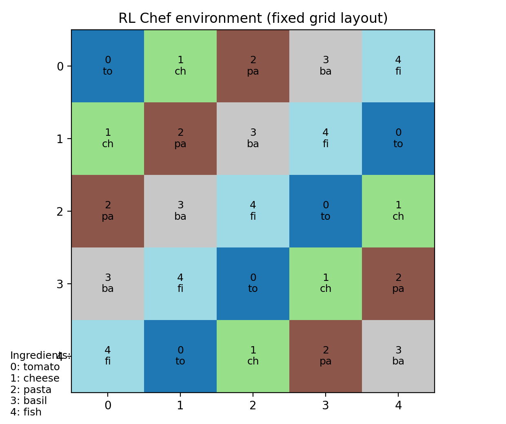
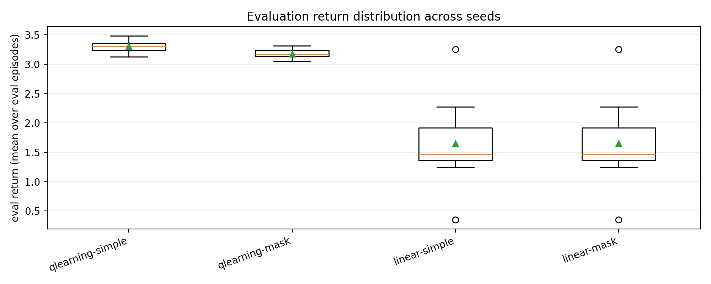
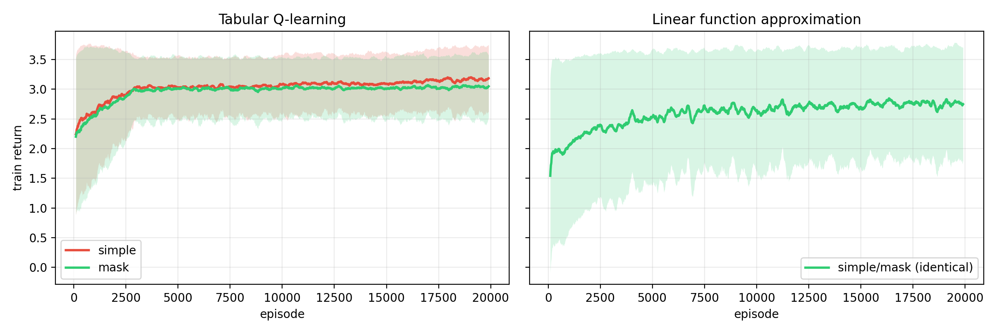
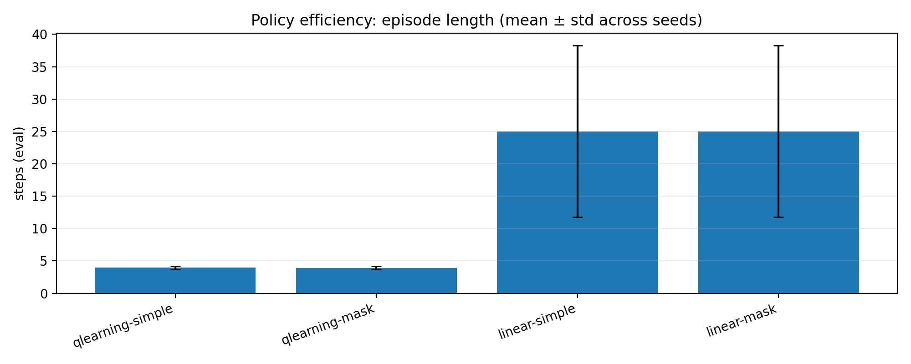
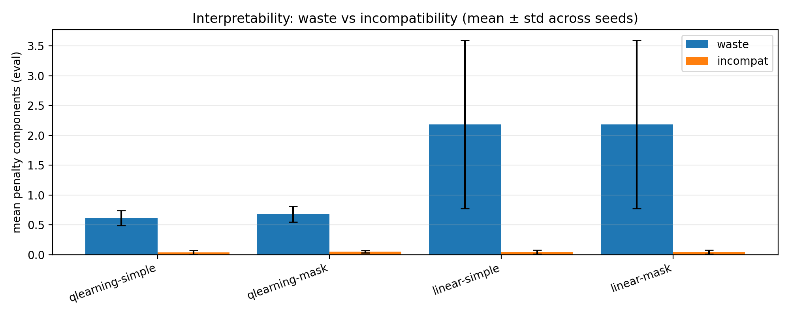
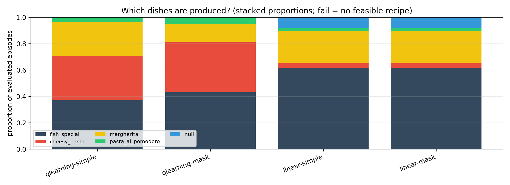

RL Chef: Tabular RL vs Linear Function Approximation
How state representation (simple vs mask) affects learning
We built a small game (RL Chef): an agent moves on a 5×5 grid, collects ingredients (each cell can be used only once), and chooses when to cook to maximise reward. We compare two learning methods—tabular Q-learning (a table of values) and linear function approximation (a learned function)—and study how the way we describe the state (simple vs mask) changes how well the agent learns.
Objectives
- Define the cooking task as an MDP and implement it in Gymnasium.
- Implement and compare: tabular Q-learning (and optionally SARSA) and linear Q-approximation (value function learned from experience).
- Study how state representation affects learning:
simple(position + inventory only) vsmask(adds which cells are already empty). - Report reproducible results over many runs: learning curves, final performance, and interpretable metrics (waste, incompatible ingredients).
Environment (MDP)
- Grid 5×5; each cell has one ingredient type (tomato, cheese, pasta, basil, fish).
- Each ingredient can be picked at most once per episode (once a cell is used, it is empty).
- 5 actions: move up, down, left, or right; or
cook. Choosingcookends the episode: the agent gets a reward from the best recipe it can make with its inventory, minus penalties for waste and bad combinations.
The hard part: deciding when to stop collecting and cook (exploration vs exploitation).
Environment layout (fixed grid)
The 5×5 grid used in all experiments. Each cell shows the ingredient id and a short name. The layout is fixed (same every episode) so results are reproducible.
Reward & task rules
- Moving: small cost per step.
- Collecting an ingredient: small positive reward.
- Cooking: the game picks the best recipe the agent can make. Reward = recipe value − penalties for waste (unused ingredients) and incompatible pairs (e.g. pasta + fish). If no valid recipe: fail penalty (worse if inventory is empty).
Recipes & interpretability
Ingredients: tomato, cheese, pasta, basil, fish.
Recipes: e.g. margherita, pasta al pomodoro, cheesy pasta, fish special (each needs a specific set of ingredients and has a value).
Rule: pasta + fish together are penalised (incompatible).
Metrics we report (besides return)
- Waste: number of ingredients collected but not used in the recipe that was cooked.
- Incompat: how many incompatible pairs were in the inventory when cooking.
State representation: simple vs mask
For tabular methods, we need a discrete “state key” to index the Q-table. We compare two choices:
simple (incomplete on purpose)
- State = position + inventory (how many of each ingredient we have).
- Does not record which cells are already empty.
- So the same (position, inventory) can correspond to different “real” situations (different cells empty) → not fully Markov.
mask (full information, Markov)
- State = position + inventory + a mask of which cells have been visited/emptied.
- With a fixed grid, this fully describes what is left to collect → Markov.
- But the number of possible states grows (e.g. \(2^{25}\) patterns for the grid), so tabular learning needs more experience to fill the table.
Observation (input to the linear agent)
The linear agent does not use a state key; it gets a feature vector \(\phi(s)\) (normalised numbers), e.g.:
- Position; which ingredient is in the current cell; whether that cell is still available; inventory (normalised); how much of each ingredient is still on the grid. (In the budget variant we add budget and round.)
In our code, simple vs mask changes only the tabular state key. The feature vector \(\phi(s)\) is the same for both ⇒ the linear agent gets the same input in both cases, so linear simple and linear mask behave identically.
Agents
Tabular Q-learning
We store a Q-value for each (state, action). Exploration: \(\varepsilon\)-greedy (random action with probability \(\varepsilon\)). Update: temporal-difference (TD) step using the best Q-value in the next state.
Linear Q-approximation
We approximate Q as a linear function of the feature vector: \(Q(s,a) = w_a^\top \phi(s) + b_a\). Same TD idea, but we update the weights \(w_a\) and bias \(b_a\) using the TD error. (L2 regularisation is available in the code but set to 0 here.)
Experimental setup
- 4 setups: Q-learning with
simple; Q-learning withmask; linear withsimple; linear withmask. - Environment: base variant (no budget; one round per episode). The paper also reports a budget variant (ingredients cost money; cooking gives revenue)—harder.
- 10 random seeds per setup. Training: 20,000 episodes; exploration \(\varepsilon\) decays from 0.3 to 0.05 over the first 3,000 episodes. Evaluation: no exploration (\(\varepsilon=0\)), 1,000 episodes per run.
- No external data: all experience comes from playing the game. We report learning curves (smoothed over 200 episodes), mean ± std over seeds, and simple “sample-efficiency” measures (average return over training; return in the last episodes).
To reproduce: python -m rlchef.experiments --variant base then python -m rlchef.analyze. Results in results/rlchef/. For budget: --variant budget → results/rlchef_budget/.
Main results (evaluation return)
Average total reward when we run the learned policy with no exploration (1,000 episodes per run, mean ± std over 10 seeds):
Takeaway: Tabular methods reach high return with low variance. The linear agent has lower average return and much higher variance across seeds.
Learning curves & policy efficiency
Tabular methods reach a stable performance in a few thousand episodes; mask does not beat simple here (bigger state space can slow learning). Episode length: tabular policies use ≈4 steps on average (collect a little, then cook); linear uses ≈25 steps (more wandering, more waste).
Learning curves (train return)
Episode length (steps) in evaluation
Trade-off & sample-efficiency
Left: each point = one seed; x = total penalties (waste + incompat), y = evaluation return. Right: two simple measures from the training curve—average return over all episodes (“AUC”) and average return in the last episodes (“last”).
Diagnostics & conclusions
Waste & incompatibility (eval)
Which dishes are produced?
Conclusions
- In this small discrete setting, tabular Q-learning is both sample-efficient and stable. The linear agent is sensitive to features, exploration, and reward design, and has high variance across seeds.
simplevsmaskonly changes the tabular state key; the linear agent gets the same features in both cases, so its results are identical. For tabular, “mask” (Markov) enlarges the state space and in our budget does not beat “simple.”- In the budget variant (paper), the task is harder: tabular still gets low but stable positive return; the linear agent collapses to constant failure (\(-1.2\)).
- Limitations: we did not do extensive hyperparameter tuning; the linear approximator is simple. Future work: add the visited-cells mask (or memory) to the linear agent’s features; try random grid layouts; try SARSA, eligibility traces, or more stable TD methods.